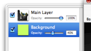
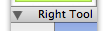
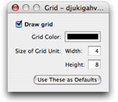

Discover Pixen
Pixen is a powerful open-source application designed for pixel editing. That is, it's intended to be used with small art at very high zoom factors, and many of its features are especially suited for this purpose. All the same, Pixen provides advanced functionality that can help an artist of any medium work intuitively and effectively. Read on to learn what Pixen can do for you. Or if you're the impatient type, find out how to get started.
Layers of detail. |
|
|  |
Layers allow you to take control of your image's composition and to encapsulate its logical components for effective editing. Master layers, and your image editing times will dramatically decrease. Find out how. |
Get animated. |
|
 |
Pixen allows you to create animations just as easily as you would single images. It's just drag and drop, then you've got an animated GIF or a Quicktime movie on your hands. |
Let's not be left-ist. |
|
|  |
Macs usually come with one-button mice, yes, but you're an artist. A professional. You're beyond those narrow-minded mice, and so is Pixen. Our tool palette is doubled up: you can define a tool and a color for both the left and right mouse buttons. |
See the final cut. |
|
 |
Pixen's extensive background configuration tools allow you to see your image just as it will appear in-game. Alternately, you can work on a traditional transparency indicator and have Pixen draw a different background when your mouse is outside the window to quickly look at things another way. |
No more missing the forest for the trees. |
|
 |
If you're working on tiles for a game, you have to be sure that it looks good when it's repeated over and over again. Pixen's tile view allows you to see how it will look tiled—without limiting your editing abilities in any way. |
Power to the palette. |
|
 |
If you're working on a sprite for a cell phone game, you know what it's like to work with restricted palettes. Pixen understands your pain. It allows you to utilize, edit, reorder, quantize, and otherwise manipulate your palette. |
Take another look. |
|
 |
While you're zoomed in pushing those pixels, you need to keep the whole document in perspective. That's why Pixen provides a powerful and flexible preview window. |
Great gridding. |
|
|  |
When you're working at extremely high zooms, it's important that you know where one pixel stops and another starts. Or perhaps you're working on a sprite sheet and want to delineate each frame. Pixen can help. |